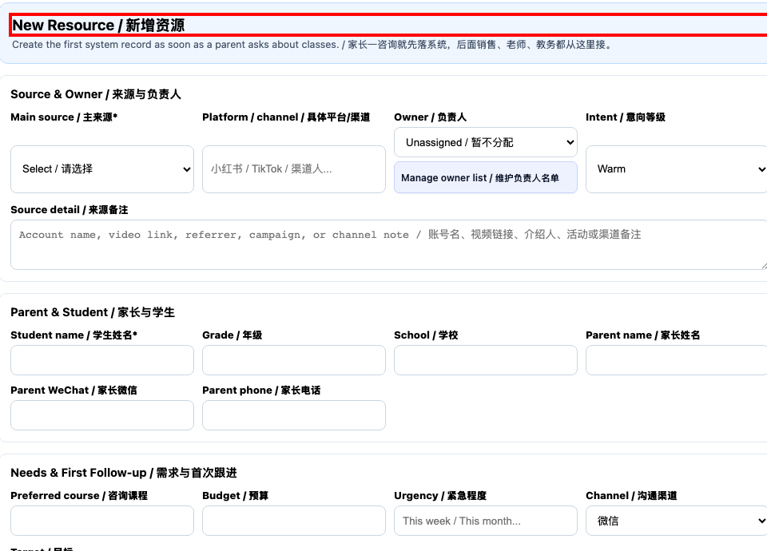

Lead Follow-up, School Guide Enquiries, and Sales Handover
功能编号：RESOURCE_HANDOFF_MASTER 版本：20261102A 排版顺序：先完整中文版，再完整英文版 Layout: Complete Chinese section first, followed by the complete English section
截图使用隔离培训数据并对应当前操作入口；不同账号的菜单和权限可能不同。涉及合同、财务、正式排课或家长发送时，先核对对象与系统状态。 / Screenshots use isolated training data and current workflow entries. Menus and permissions vary by account. Verify the target and system state before contracts, finance actions, formal scheduling or parent publication. 一份文档只讲一个功能。 网页端与小程序端分开；员工按编号一步一步操作。 One document covers one function only. Web and Mini Program guides are separate.
中文版 · 操作前准备
点击任何按钮前，先完成这四项准备
准备
使用本人账号和岗位对应工作台。
除非主管明确授权，否则只使用培训数据。
准备正确的对象、日期、负责人和所需资料。
把 PDF 与系统并排打开，每次只做一个编号步骤。
禁止
不使用同事账号。
不猜测姓名、金额、日期、状态或缺失字段。
结果不明确时不重复点击保存、应用、批准、发布或发送。
页面不一致时立即停止并询问负责人。
中文版 · 完整步骤总览
资源跟进、学校指南咨询与成交交接
1按电话、微信、邮箱和学生姓名查重后再新增资源。
2明确负责人；每次跟进记录事实、结果、下一步和日期。
3需要学术判断时发起老师评估，写清背景、问题和返回时间。
4学校指南只使用已核实资料，不承诺录取、费用或截止日期。
5成交后建立学生、合同或排课工单并完成负责人交接。
中文流程 · 第 1 步，共 5 步
按电话、微信、邮箱和学生姓名查重后再新增资源。

当前新增资源表单：先查重，再核对来源、负责人和学生。 / Current New Resource form; check duplicates and owner first.
虚拟资源或学校指南页面；未派发评估或转学生。 / Synthetic resource or School Guide page; no request or conversion was submitted. 分段放大同一真实截图，按 1→2→3 阅读。 / Enlarged parts of one real screenshot, in order.
Use training data unless a manager authorises real data.
Prepare the correct target, date, owner, and source records.
Keep this PDF beside the system and complete one numbered step at a time.
Never
Do not use another employee's account.
Do not guess names, amounts, dates, statuses, or missing fields.
Do not repeat Save, Apply, Approve, Publish, or Send when the result is unclear.
Stop and ask the owner when the page differs.
ENGLISH SECTION · WORKFLOW OVERVIEW
Lead Follow-up, School Guide Enquiries, and Sales Handover
1Check duplicates by phone, WeChat, email, and student name before creating a lead.
2Assign an owner; every follow-up records facts, result, next action, and date.
3Request a teacher assessment when academic judgement is needed, with context, questions, and due time.
4Use verified school-guide information only; never promise admission, fees, or deadlines.
5After conversion, create the student, contract, or scheduling ticket and hand over ownership.
ENGLISH WORKFLOW · STEP 1 OF 5
Check duplicates by phone, WeChat, email, and student name before creating a lead.
当前新增资源表单：先查重，再核对来源、负责人和学生。 / Current New Resource form; check duplicates and owner first.
Complete in this order
Search the resource list using known contact details and student name; do not merge different students merely because names resemble each other.
If a new record is needed, select New Resource and complete required fields including student, source and first follow-up.
STOP: If the name, amount, permission, status, or button differs, do not continue or click again. Preserve the screen and contact the workflow owner.
ENGLISH WORKFLOW · STEP 2 OF 5
Assign an owner; every follow-up records facts, result, next action, and date.
虚拟资源或学校指南页面；未派发评估或转学生。 / Synthetic resource or School Guide page; no request or conversion was submitted.
Complete in this order
Open the correct resource and confirm the owner. Under Add Follow-up record channel, facts, result, next action and due time.
After saving, check the Follow-up Timeline. The screenshot is a synthetic resource; no new follow-up was submitted.
STOP: If the name, amount, permission, status, or button differs, do not continue or click again. Preserve the screen and contact the workflow owner.
ENGLISH WORKFLOW · STEP 3 OF 5
Request a teacher assessment when academic judgement is needed, with context, questions, and due time.
虚拟资源或学校指南页面；未派发评估或转学生。 / Synthetic resource or School Guide page; no request or conversion was submitted.
Complete in this order
When teacher judgement is needed, record the context and questions in the resource information first.
Under Teacher Assessment select the teacher and due time, then request the assessment. The example has not been submitted.
STOP: If the name, amount, permission, status, or button differs, do not continue or click again. Preserve the screen and contact the workflow owner.
ENGLISH WORKFLOW · STEP 4 OF 5
Use verified school-guide information only; never promise admission, fees, or deadlines.
虚拟资源或学校指南页面；未派发评估或转学生。 / Synthetic resource or School Guide page; no request or conversion was submitted. 分段放大同一真实截图，按 1→2→3 阅读。 / Enlarged parts of one real screenshot, in order.
Complete in this order
Open Find Schools in the Singapore School Guide and filter by school type and curriculum; inspect the individual school information.
Confirm admission requirements, fees and dates with the school’s latest official information; do not guarantee admission.
STOP: If the name, amount, permission, status, or button differs, do not continue or click again. Preserve the screen and contact the workflow owner.
ENGLISH WORKFLOW · STEP 5 OF 5
After conversion, create the student, contract, or scheduling ticket and hand over ownership.
虚拟资源或学校指南页面；未派发评估或转学生。 / Synthetic resource or School Guide page; no request or conversion was submitted.
Complete in this order
After conversion, use Ops Handoff to link or convert the student as permitted and create a scheduling ticket when needed.
Verify record ownership, responsible person and next action before handing over to Academic. A booking link requires a converted student.
STOP: If the name, amount, permission, status, or button differs, do not continue or click again. Preserve the screen and contact the workflow owner.
ENGLISH SECTION · FINAL CHECK
Report completion only when every item is true
Employee self-check
The account, platform, role, and target record are correct.
Every step was completed in order.
The expected final status remains after refresh.
Non-sensitive evidence of the result was saved.
You can explain who handles an exception.
Stop and escalate
Required data or permission is missing.
The page, button, or status differs from the guide.
An unauthorised action would affect finance, contracts, packages, payroll, live sessions, or parent-visible content.